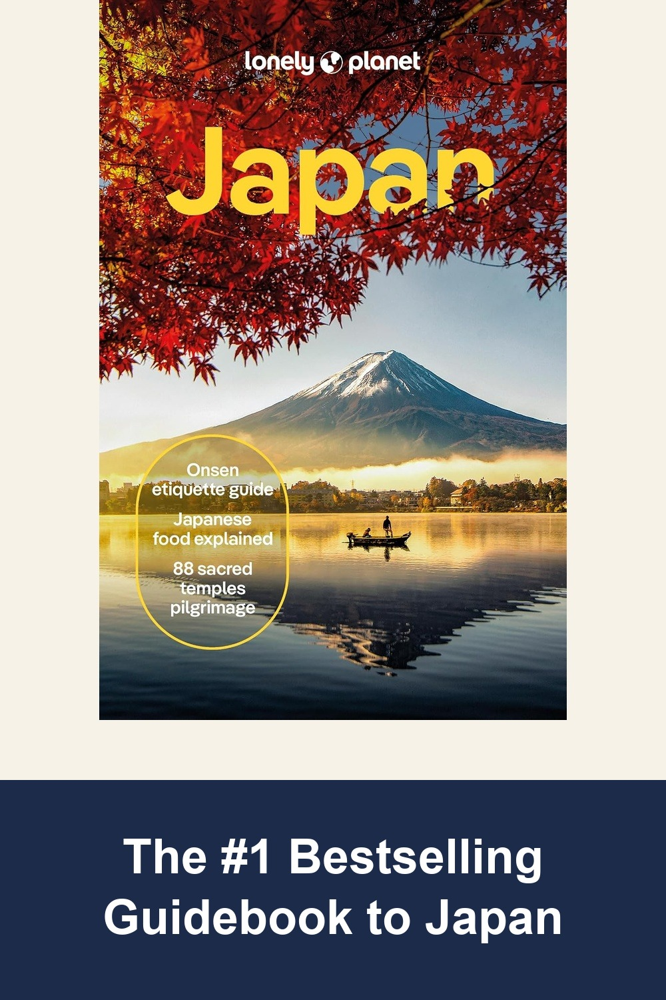
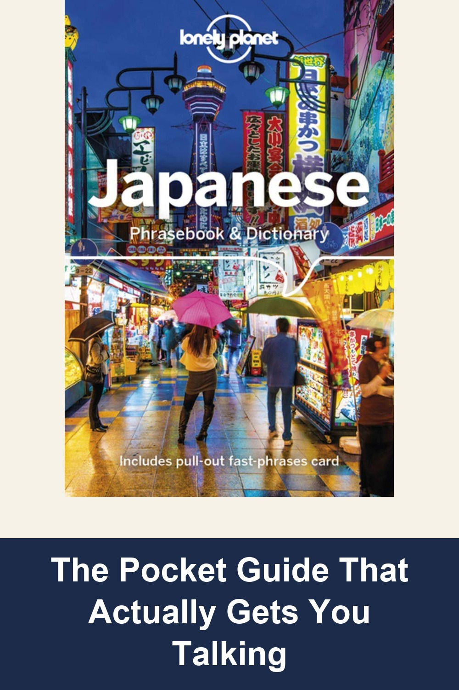
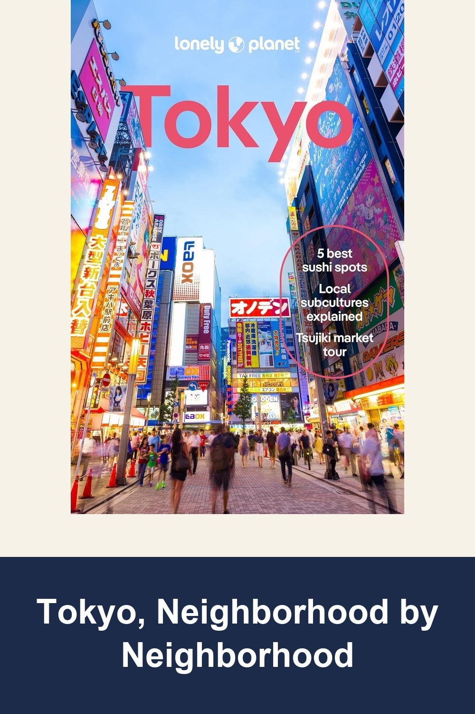

Lonely Planet Japan: Comprehensive Travel Guide (2024, 18th Edition)
Lonely Planet's most comprehensive Japan guide, fully updated for 2024 — detailed itineraries, maps, and insider tips covering Tokyo, Mt Fuji, Kyoto, Hiroshima, Hokkaido and more. "Classic. Comprehensive. Crucial." — Library Journal.
Fabulous! Comprehensive, and easy to navigate guide. I rate this as an essential tool for visits to Japan.— verified Amazon buyer
View on Amazon →
Lonely Planet Japanese Phrasebook & Dictionary
3,500-word two-way dictionary plus real, useful phrases organized by travel scenario — ordering food, asking directions, meeting people. Small enough for a jacket pocket, built for travelers who want more than just 'hello' and 'thank you.'
Super helpful, small (size of a smart phone), and practical book to have on hand if you are going to Japan. The phrases are spelled out in both Japanese and phonetic spelling so you can learn to recognize and speak the syllables. The categories are very intuitive and well organized.— verified Amazon buyer
View on Amazon →
Lonely Planet Tokyo: Plan the Trip of a Lifetime (2024, 14th Edition)
The city-specific deep dive for anyone spending most of their trip in Tokyo — Shibuya, Shinjuku, Asakusa, Ginza and more, plus day trips to Mt Fuji, Hakone, and Kamakura. Includes a pull-out map built for actually walking the city.
Absolutely indispensable and planning our trip to Tokyo. We used it every evening to look at areas we were going to stay during our week in Japan. Highly recommended— verified Amazon buyer
View on Amazon →